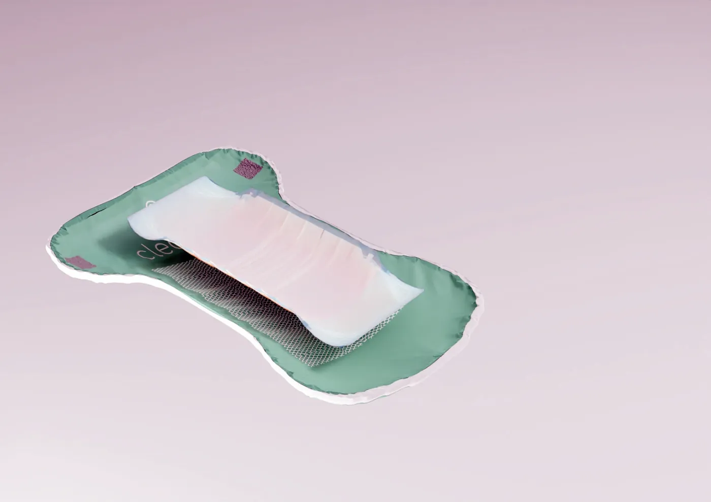
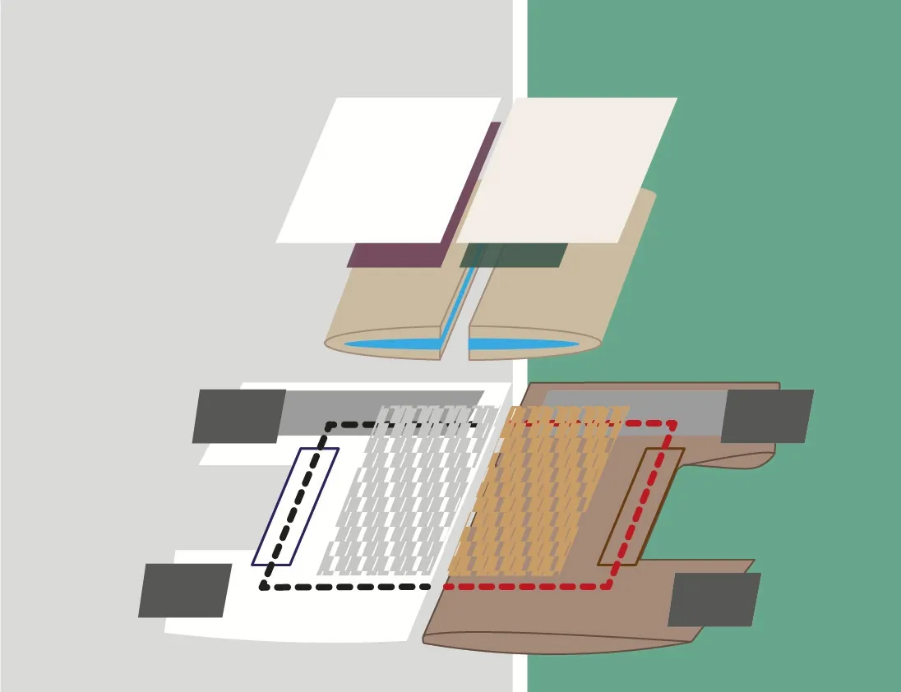

Sustainable Materials Engineering2021
Cleannest
Nappy Product Development
How might we stop nappies from ending up in landfill?

Cleannest (now Peachies) is on a mission to transform the diaper industry’s footprint without losing sight of what is most important to carers - healthy, happy children.
The diaper industry is environmentally invasive, with only a few big companies dominating the entire market. It takes a diaper 500 years, or 16 generations, to degrade in landfill. Advanced polymers go into every diaper created and none are recovered. The circular solution integrates the latest innovations in materials technology, direct to consumer service and recycling.

Types of Nappy
I originally compared standard single-use disposable diapers to a more sustainable hybrid model. This would prevent the whole diaper being discarded and hopefully allow the inner liner to be recycled or composted. Getting the best of both worlds, single-use and cloth, is unrealistic, so we pivoted away from hybrids to focus on the main environmental problem - disposable diapers. Cleannest (now Peachies) has broken into the market with a nappy with 40% less CO2 emissions compared to competitors.